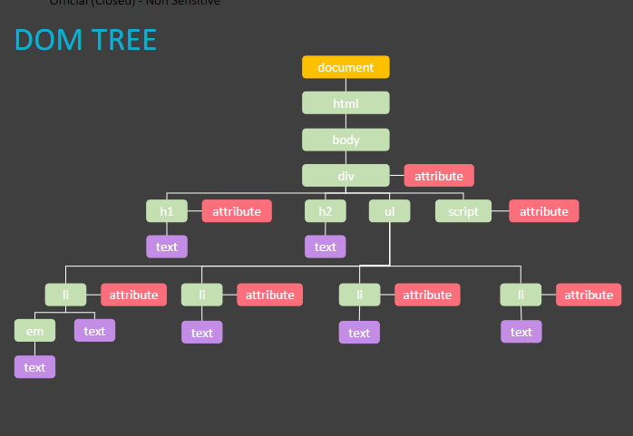
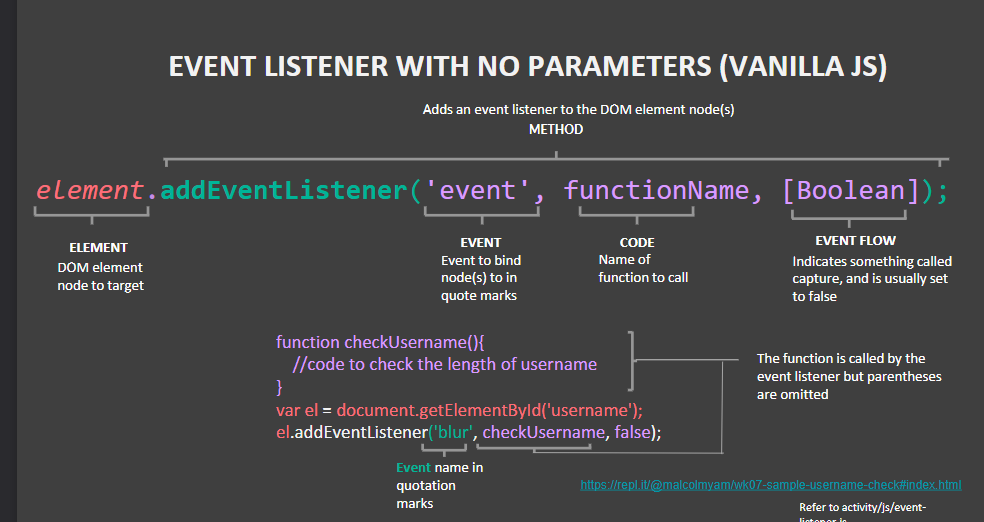

Week 7 Development Blog
What I learnt in Week 7:
- Document Object Model (DOM)
- MEvent Handling & Validation
- JSON Local Storage
Document Object Model:
As a browser loads a webpage,it creates a model of that page.
The model is called a DOM Tree
Here is an example of a DOM Tree:

Steps to use:
Locate the note that represents the leemnt you want to work it
Use its text content, child elements and attributes
Using getElementById(); or getElementsByClassName(); or getElementsByTagName();
querySelectorAll(); also allows to select multiple elements
Event Handling
There are different type of events such as
UI Events
Keyboard Events
Mouse Events
Focus Events
Form Events
Event Listeners are used to trigger a function when an event occurs

Event Object tells information about the event, containing helpful data about the event
It can be passed to any function that is event handler or listener
Validation:
Cilent vs Server Validation:
Client Validation is done on the client's computer, before sending the data to the server
It provides instant feedback and saves load on server
Some input types are textboxes, radio buttons, checkboxes, dropdown menus, submit buttons, etc
JSON Local Storage:
HTML5 storage lets you store data on the client side and access it later
Data it stores can only be accessed by domain that set the data
There is local and session storage, implemented with localStorage and sessionStorage objects
Local Storage: Stored when tab closed, all open windows/tab can access
Session Storage: Not Stored when tab closed, only tab that created can access
Can store up to 5mb of data per domain in storage object, will ask for user for permission if require more
Data stored in JSON is made up of keys and values
Value can be string, number, Boolean, array, object or null